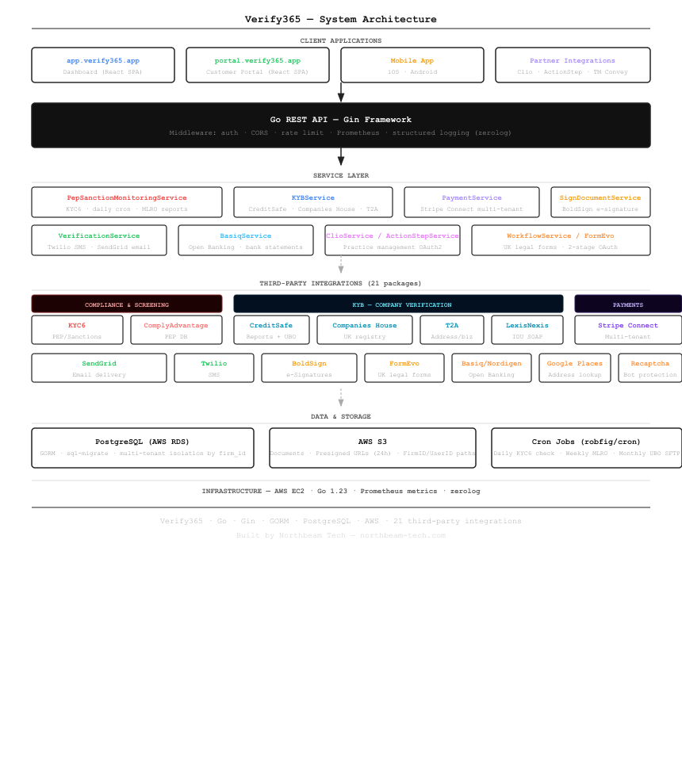

Verify365 — KYC/KYB Compliance Platform for UK Law Firms
A production Go API powering identity verification, PEP/sanctions screening, e-signatures, and multi-tenant payments — with 20+ third-party integrations built for the UK legal sector.
About the Project
UK law firms are required by law to verify the identity of clients, screen for Politically Exposed Persons (PEPs) and sanctioned individuals, and maintain ongoing compliance monitoring. Verify365 automates this workflow end-to-end — from onboarding a new client to ongoing 365-day screening, document signing, payment collection, and practice management integration.
The platform serves multiple user roles: firm admins, lawyers, supervisors, compliance officers, and end customers — each with their own dedicated interface. We built and maintain the entire backend as a Go REST API, integrated with over 20 third-party services.
System Architecture

Client Applications
- app.verify365.app — Dashboard for firm admins, lawyers, and supervisors (React SPA)
- portal.verify365.app — Self-service portal for end customers: ID upload, document signing, payments (React SPA)
- Mobile app — iOS and Android client for on-the-go access
- Partner integrations — Direct OAuth2 connections to Clio, ActionStep, and TM Convey practice management systems
What We Built
Identity & Compliance Verification
The core compliance workflow combines multiple data sources to produce a verified status for each client:
- LexisNexis IDU — SOAP-based identity document verification (passport, driving licence, ID card) with address checking
- KYC6 — PEP and sanctions screening with 98% match threshold, fuzzy name matching, ISO alpha-2/3 country normalisation, and ongoing 365-day monitoring via worklists
- ComplyAdvantage — Additional PEP/sanctions/adverse media database search
- Companies House — UK company registry lookup for officer details and registered addresses
- CreditSafe — Full company credit reports, UBO (Ultimate Beneficial Ownership) data via monthly SFTP download, and document images
- T2A (Digi-Dent) — Historical address verification, director searches, VAT validation
- Confirmly — Law firm regulatory validation and SRA membership checks
PEP/Sanctions Ongoing Monitoring
When a firm activates ongoing monitoring for a client, the platform creates a KYC6 worklist and adds the individual or business as a monitor record. A cron job runs daily at 20:00 UTC, fetches match results for all active records, and alerts the firm's MLRO (Money Laundering Reporting Officer) by email if any new matches are found. Expiry warnings fire at 30 days and 1 day before the 365-day window closes. A weekly scheduled job sends MLRO summary reports every Friday.
Document Signing with BoldSign
The platform integrates BoldSign for legally binding e-signature workflows. Signing URLs are embedded directly in the customer portal — customers sign without being redirected to BoldSign's domain. The integration handles signing order enforcement, sender identity verification, template management, and completed document download.
Multi-Tenant Payments with Stripe Connect
Verify365 supports multiple partner firms, each with their own Stripe connected account.
When a payment is initiated, the API selects the correct Stripe client based on the partner record.
For partner accounts, a platform fee of 1.85% + £0.20 is calculated and deducted before routing the net amount to the connected account via Stripe's TransferData.
Dual webhook endpoints handle both platform-level and connected-account events.
Open Banking & Bank Statement Verification
For financial due diligence, the platform integrates Basiq (AU/NZ) and Nordigen (EU/UK Open Banking) to retrieve and verify bank statements directly from the client's bank. This allows firms to confirm source of funds without requesting paper statements.
UK Legal Form Generation
The FormEvo integration allows firms to generate and submit UK legal forms (SDLT, TA10, AP1, NM01, eAP1, and more) directly from the platform. It uses a two-stage OAuth flow: platform credentials to obtain a platform token, then user credentials to obtain a user-scoped token with automatic refresh.
Practice Management Integration
Clio and ActionStep integrations use OAuth2 to pull matter and contact data directly into Verify365, eliminating duplicate data entry. Completed verification documents are pushed back to the practice management system automatically. TM Convey is integrated for property searches and conveyancing order workflows via webhook-based status updates.
Technical Highlights
- 21 third-party packages — each vendor has a dedicated Go sub-package with a consistent client interface, isolated auth management, and typed response models
- Automatic token refresh — CreditSafe tokens (1h TTL) are cached and refreshed at 55 minutes using
sync.Mutexto prevent concurrent re-auth storms - KYC6 dual API keys — the search API and monitoring API use separate keys, routed through separate base URLs, to match KYC6's compliance tier model
- Cron-driven compliance —
robfig/cronschedules daily PEP checks, weekly MLRO reports, and monthly CreditSafe SFTP UBO downloads - S3 multi-tenant paths — documents are stored as
FirmID/UserID/filenamewith 24-hour presigned URL generation and legacy path fallback for partner migrations - Structured observability —
zerologfor structured JSON logging, Prometheus metrics viagin-prometheus
Stack
Related Technical Posts
- Automated PEP & Sanctions Monitoring with KYC6 in Go
- Multi-Tenant Stripe Connect Payments in a Go SaaS Platform
- Company Verification and UBO Data via CreditSafe SFTP in Go
Building a compliance or legal tech platform? Get in touch →